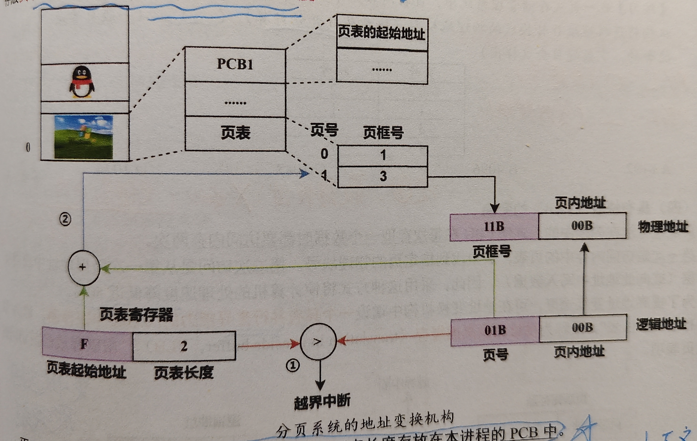
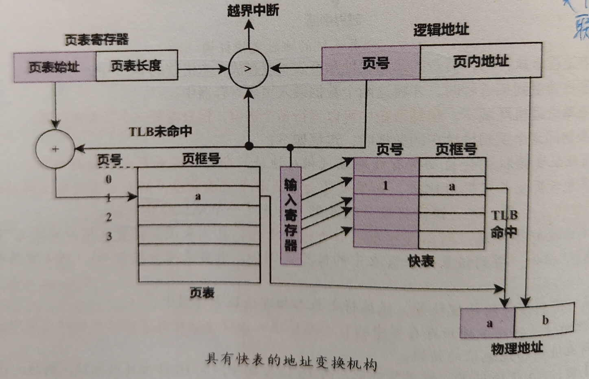
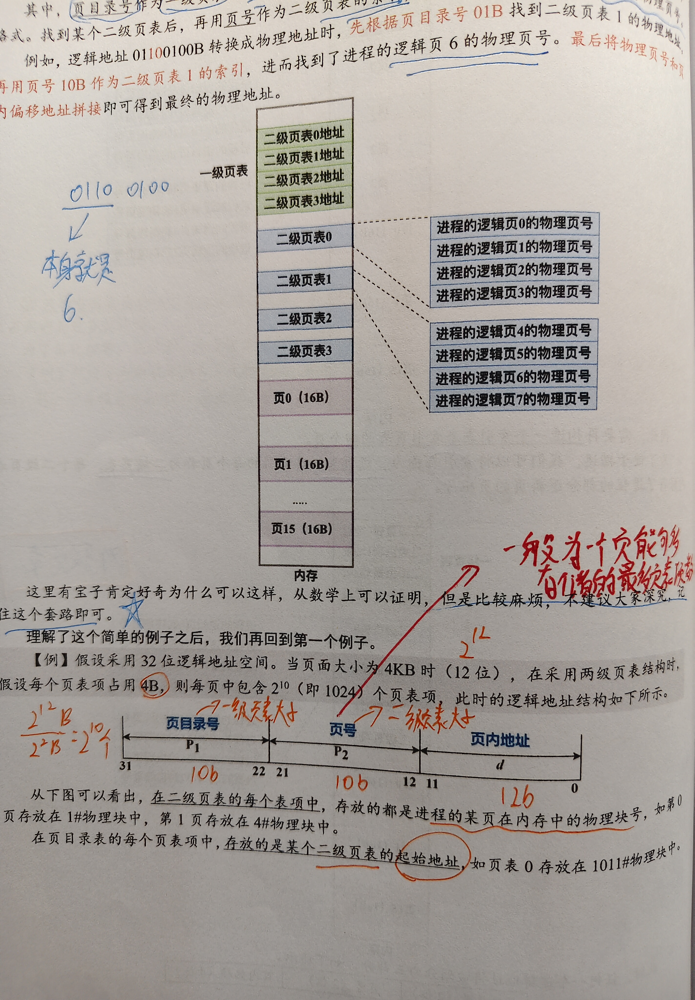
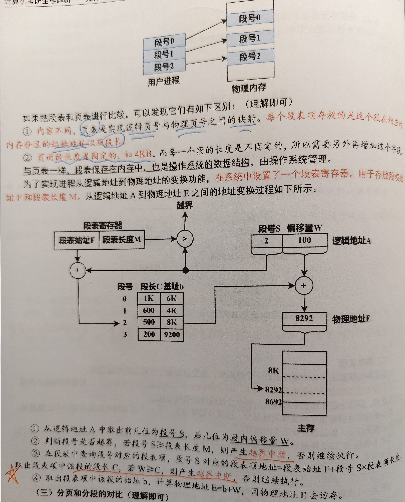
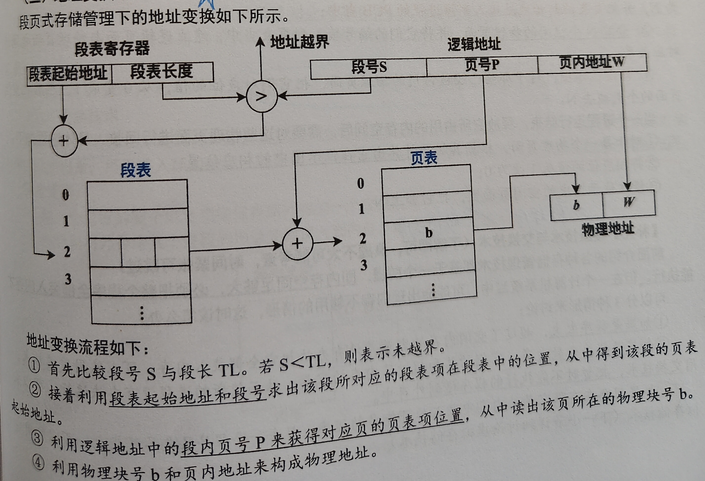

3.3 内存分页分段管理
在离散情况下，使用分页、分段、段页式管理。
重点 易错 易混
1. 本质
为了解决分区管理的产生的外部碎片问题，从系统角度和用户角度，提出了分页管理和分段管理，形式来看是在内存中分布是离散的。
2. 结构/组成
分页管理
结合页表与动态重定位的思想，其主存与磁盘的基本信息交换单位是页，是物理单位，是系统行为，用户不可见。
- 逻辑地址划分为页号与页内地址
- 高位是页号，低位是页内地址
- 注意页通常包含高速缓冲器的块。
- 分页是由硬件完成的。
- 使用页表，从而实现页号到页框号的映射，接着用页框号与页内地址拼接，得到真正的物理地址。
- 页表由操作系统管理，故页表放置于进程的PCB中，即其处于内核空间中。
- 页表类似一个数组，一般不存储页号，页号作为数组下标，记录的是对应的页框号。
- 需要使用一个页表寄存器。
- 所以发生进程调度时，也涉及到页表的装入和撤出，即上下文切换。

- 当访问一个页时，需要访存两次，可以使用快表，类似计组中的全相联映射。
- TLB是一个具有并行查询能力的高速缓冲寄存器。
- 快表只存储了页表的一小部分。

- 当页表较大时，不足以用一个页来存储时，从而将页表也离散存储，产生了二级页表和多级页表。
- 页表看作为数组，所以要求索引是连续的，从而有了二级页表产生。
- 索引表作为一级页表，一般可以用一个页可以存储下来。
- 二级页表的大小一般为一个页最多能够存储页表项数目。

分段管理
分页管理中的地址为一维地址，而在分段管理中是二维地址（段号，段内地址）。
- 便于存储保护。 可以对各个段设置不同的权限，从而便于实现存储保护。
- 便于存储共享。
- 虽然分页管理可以共享，但是对于同一处共享的数据，由于是基于页进行管理的，故每个进程对该处都会产生N个页表项。而分段管理中，对该处数据，仅仅需要一个段表项即可。
- 除了每个进程有关于共享段的段表项，系统中也会有一个共享段表，其中会设置一个count字段用来记录共享该段的进程数目。
- 一般对这种只允许读，不允许写，可以被多个共享的代码称为可重入代码。
- 由以上可得，分段管理是从用户角度考虑出发，段是信息的逻辑单位。
- 逻辑地址划分为段号与段内偏移。
- 注意在找到其物理地址时，会进行两次越界判断。
- 在分页管理中，页与页框大小是固定的，所以在找到页框后，不会发生越界。
- 段的长度不固定。

段页式管理
结合分页管理的提高内存利用率，以及分段管理的利于段的共享和保护。
- 对逻辑地址划分，高位是段号，低位是段内地址（页号，页内地址）；从而使用段表和页表进行管理。
- 每个段表项包括了页表长度和页表始址，指向页表后，页表项记录了对应的页框号（块号）。
- 整个过程访存了三次。可以设置高速缓冲寄存器，需要同时利用段号和页号进行检索。
- 在地址映射时，仅仅需要一个段表寄存器即可。

物理页面表
用来记录各个物理页面表的使用情况，可以使用位示图实现。
内存的分配与回收
涉及到PCB的修改以及位示图的修改。
覆盖技术与交换技术
覆盖技术发生在一个进程的内部，交换技术发生在多个进程之间。产生的原因是内存不够大，不足以一次容纳所有数据都在内存中。
3. 核心操作
- 后续补充
4. 常考点
- 后续补充
5. 易错点
- 后续补充
6. 关联知识
- 后续补充
7. 真题记录
- 后续补充